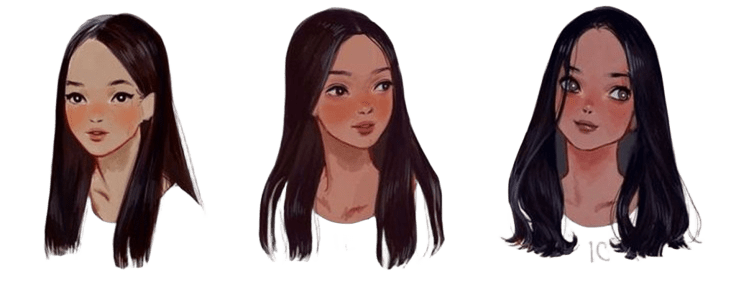
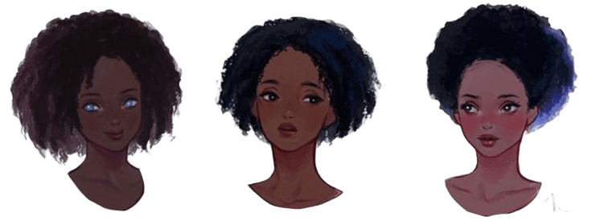

Test Capilar Inteligente
Responde estas preguntas para obtener tu rutina personalizada.
쮺칩mo describirías tu tipo de cabello natural?

Liso
Ondulado
Rizado

Crespo o afro
쮺u치l es el grosor de tu cabello?
Fino
Medio
Grueso
쯉ientes tu cabello seco o deshidratado?
Selecciona una opción
Sí
A veces
No
쯊ienes puntas abiertas o el cabello quebradizo?
Selecciona una opción
Sí
No
No estoy segura
쯊u cuero cabelludo produce exceso de grasa?
Selecciona una opción
Sí
No
No sé
쯊u cabello ha sido sometido a alguno de estos procesos?
Tintura o decoloración
Alisado, keratina o permanente
Uso frecuente de plancha o secador
Ninguno
쯊u cabello presenta frizz difícil de controlar?
Selecciona una opción
Sí
Sólo en ambientes húmedos
No
쮺칩mo se siente tu cabello al tacto?
Selecciona una opción
Áspero o enredado
Suave y manejable
Mixto: raíces grasas, puntas secas
쯈ué te gustaría mejorar o lograr con tu tratamiento?
Selecciona una opción
Hidratación intensa
Reparación profunda
Control de frizz
Brillo y suavidad
Nutrición para rizos definidos
Equilibrar raíces grasas y puntas secas
쮺on qué frecuencia te aplicas tratamientos capilares?
Selecciona una opción
Semanalmente
Quincenalmente
Muy pocas veces
Anterior
Siguiente
Ver rutina